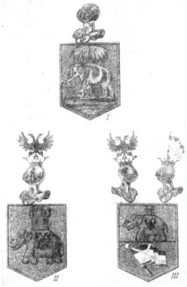

Апраксин или Лефорт?
Изучая литературу, связанную с символикой в названиях кораблей Азовского флота, столкнулся с несколькими фактическими ошибками в толковании тех или иных символов, девизов и эмблем. Как правило, они возникали из-за неосмысленного копирования сведений, недостаточно проверенных и обоснованных. Источником распространения одной из таких ошибок является статья Н.А. Каланова «Названия петровских кораблей». В целом, очень интересная, сообщающая много полезной информации, статья эта, вместе с тем, содержит ряд неточностей, возможно просто описок. Вот что Каланов пишет относительно символики кораблей Азовского флота:
«Следует отметить, что корабельная "именная" символика отражала мировоззрение людей той далекой эпохи, их общественное сознание; так, одну из "кумпанских" баркалон назвали "Слон" ("Елифант") - символ, означающий силу, прочность, надежность и мощь; недаром этому названию соответствовал такой девиз: "Злым - лих". Корабельное имя "Слон" стало одним из самых распространенных во всех иностранных флотах. Можно предположить также, что "кумпанство" таким названием отметило заслуги "главного адмиралтейца" Ф.М.Апраксина, в фамильном гербе которого было изображение слона.»
Здесь что ни слово, то ошибка. Посмотрим по порядку.
Во-первых, среди «кумпанских» БАРКАЛОН не было корабля с названием «Слон». На ступинской верфи гостиным кумпанством в 1697 году под руководством венецианского мастера Еронима Дебония был построен 44-пушечный двухдечный корабль «Слон» («Олифант»), который относился к классу так называемых «БАРБАРСКИХ» кораблей.
Во-вторых, эпитеты про «силу, прочность, надежность и мощь» по отношению к построенным на ступинской верфи кораблям можно было рассматривать только как издевку. Вот что пишет об этих кораблях С.Елагин:
«Десять кораблей, строенных на Ступине на счет гостиных кумпанств, итальянскими мастерами, служили резким протестом против системы, принятой Петром ддя создания флота. … Они оказались крайне дурными. Кроме несовершенства постройки, корабли эти успели значительно пострадать от небрежности. Въ октябре 1699 года, т. е. на первом году своего существования они уже рассохлись и были занесены песком вероятно после весеннего водополья.»
В-третьих, в «иностранных флотах» (да и в российском тоже) корабли с названием «Элефант» строились и до нашего «Слона».
В-четвертых, заслуги «главного адмиралтейца» кумпанство не могло отметить хотя бы потому, что Федор Матвеевич Апраксин был назначен главой Адмиралтейского приказа только в 1700 году, после отставки коррупционера Протасьева, т.е. два года спустя после того, как в переписке появилось название корабля «Слон».
И наконец, самое главное: ни в фамильном (дворянском), ни в графском гербах Ф.М. Апраксина никогда не было изображения слона. Вот описания этих гербов из Wiki:
«Гербы графов и дворян Апраксиных разнятся между собою существенно. Дворянский герб представляет щит, разделенный на четыре части. В первой — в красном поле, а во второй — в золотом — дворянская корона и под ней сабля острием налево. В третьей части — в золотом поле и в четвертой — в голубом — положены накрест две пушки. Над гербовым щитом — шлем и корона дворянская. Щитодержцы — уздени Большой Орды с луком в руке, имеющие за плечами колчаны…
Графский герб Апраксиных тоже щит, рассеченный на четыре части. В первой — в красном поле два серебряные меча, продетые сквозь золотую дворянскую корону и положенные накрест. Во второй части гербового щита — в голубом поле корабль с парусами. В третьей части — наискось положенный в голубом поле серебряный якорь, обвитый канатом. В четвертой части — в красном поле золотая шпора. В малом щитке, посредине большого щита — в зеленом поле белый двуглавый орел. Над щитом графская корона с выходящими из нее двумя адмиральскими флагами (белого цвета с голубым Андреевским крестом). По сторонам короны два дворянские шлема. В нашлемниках: справа — серебряный якорь; слева — золотая графская корона, из которой выходят два черные орлиные крыла.»
Возможно, Н.А.Каланов перепутал Ф.М.Апраксина с Лефортом. В гербе рода Лефортов действительно был слон. Вот что по этому поводу пишет Телетова Н. К. в статье «Герб Ганнибалов»:
Рассмотрим внимательно герб Лефорта, воспроизведенный в трех исторически последовательных вариантах.

Три герба Лефортов
Первый герб рода, вышедшего из Пьемонта, зафиксирован в XVI в.: на щите изображен слон, шествующий вправо, с хоботом, подвернутым внутрь, и пальмою над фигурой. Слон и пальма, как предполагает исследователь, указывают на итальянское происхождение рода. Не очень понятно, почему слон связывается с Италией; скорее можно подумать, что он явился обозначением силы — таков смысловой перевод фамилии Fort (при опущении артикля, часто сохранявшегося в стародворянских французских фамилиях).
Этот первый герб Лефортов утверждается за родом в XVI в. в Швейцарии. Он же служил и Францу Яковлевичу Лефорту по прибытии его в Россию, однако волею Петра I в 1694 г. был сильно изменен. Из Архангельска Лефорт писал об этом своему брату, заметив, что его адмиральское судно названо «Элефант» (‘слон’).
В гербе была убрана пальма, на спину слона положен покров, над которым вместо пальмы стала возвышаться зубчатая башня — Fort. Хобот слона воинственно поднялся вверх. Черный двуглавый орел из императорского русского герба перешел на покров на боку слона, а второе его изображение расположилось в нашлемнике.
Еще через два года, в 1696 г., возник последний, третий вариант того же герба. На нем башня-форт на спине слона несколько уменьшилась в размерах, сгладились ее рельефы, в нижней части щита появилось изображение андреевского морского флага, а над щитом вместо одного шлема появились два, повернутых друг к другу.
Скорее всего, главная ошибка Н.А.Каланова в том, что он пытался «подогнать» происхождение названий кораблей к заранее заданной идее о влиянии «общественного сознания» на корабельную символику. Как мы видели, такой подход не отражает истинного положения дел в этой области (см. нашу запись в ЖЖ «Эмблемы и девизы»).